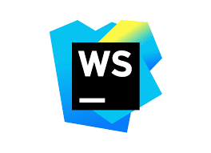

The process of creating my website

The creation of this website was a part of a final exam project for my web development course at Lake Michigan College. Before I took an official web development class in college, I spent the entire summer in 2022 learning HTML and CSS in an app, of all places, called Mimo. I have to give credit where credit is due, by learning web development through Mimo, my first 10 weeks in my web development class was a breeze! Mimo was able to give me all the foundational coding skills needed to fully understand and master the fundamentals of web development in college.
When I learned that I needed to create a portfolio website for my final exam, the first thing I did was go online and learn as much as I could about portfolio websites. I wanted to make sure that I included not only the course curriculum for the final exam, but everything I would want for my own portfolio as well. That is when I stumbled on Scrimba. This was an online learning platform that walked me through and taught me industry techniques, and UI/Layout design when coding a portfolio website. I found a perfect tutorial on building a portfolio, and decided this was going to be the framework for my portfolio project. If there is one metaphor I learned the most from Professor Keeler, my web development instructor at LMC, it is "Why re-invent the wheel". Scrimba took my knowledge gained from Mimo and College, and gave it a real-world taste. The creation of this website was an ongoing project throughout 14 weeks in school. Total hours could be around 20-30, but the knowledge I gained far surpass the time it took me to create this website.
The Scrimba program taught me a lot about variables and a methodology called BEM. BEM stands for Block, Element, Modifier, it is a popular naming method to allow for better organization among a long list of classes in CSS. I also learned how to create custom variables, which are referenced constantly throughout my CSS code for this website.
This entire website was built on Jet Brains Webstorm application. I learned a lot of specific macro commands that are integrated in this software, as well as a lot of configuration settings that allow me to debug and test issues I have within my code. Having spent so much time in Webstorm throughout my capstone project and this portfolio project, I am now accustomed to many of the shortcuts, and tools built into this wonderful software.
Thank you Webstorm, Professor Keeler, Scrimba, and Mimo